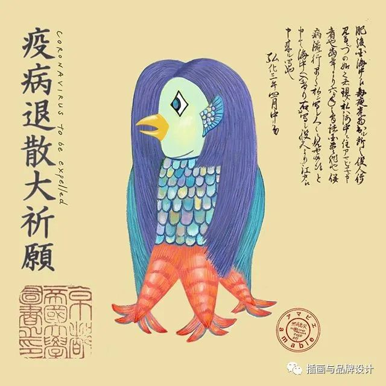
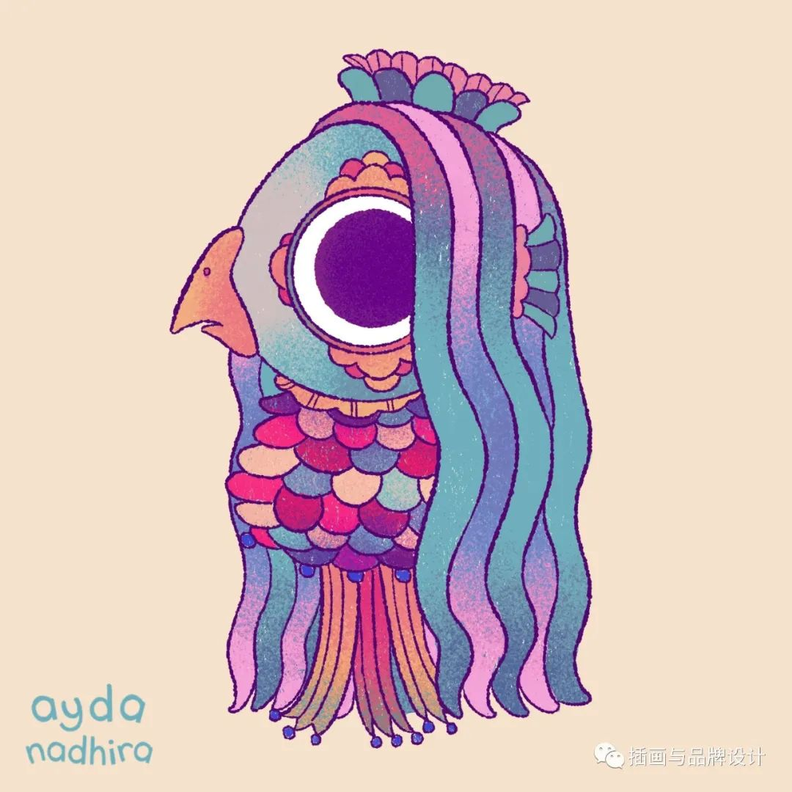
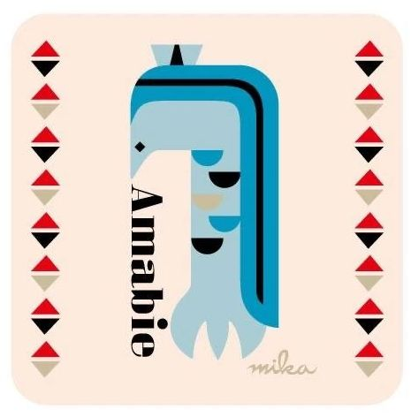
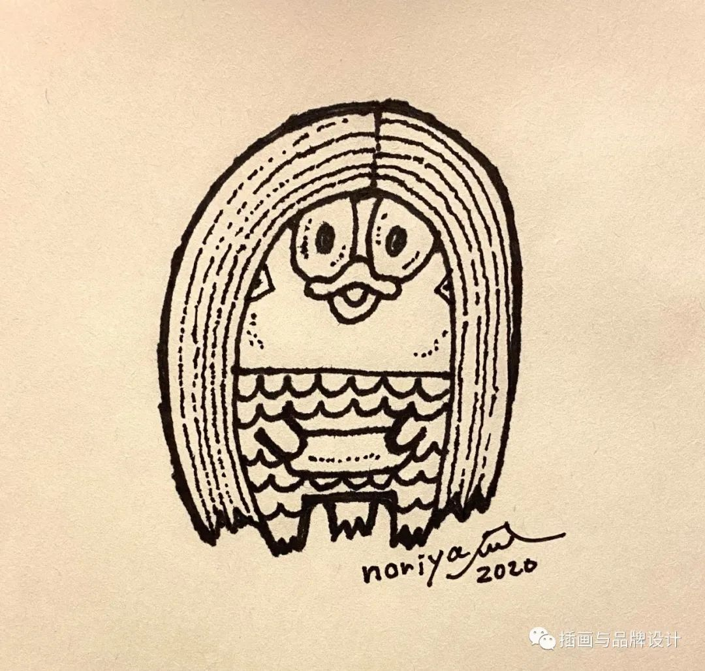

无穷的远方，无数的人们，都与我有关。
新型冠状病毒肺炎（Corona Virus Disease 2019，COVID-19），简称“新冠肺炎”，世界卫生组织命名为“2019冠状病毒病”。
2019年12月以来，湖北省武汉市部分医院陆续发现了多例有华南海鲜市场暴露史的不明原因肺炎病例，
现已证实为2019新型冠状病毒感染引起的急性呼吸道传染病。 截至2020年4月28日当日，新冠肺炎已造成207265人死亡。
当地时间2020年3月11日，世卫组织宣布当前新冠肺炎疫情可被称为全球大流行（pandemic）。
祖国和人民忘不了你们
时代永远铭记你们
2020年，你们将征服一切苦难
还给这片大地
蔚蓝的天空，明媚的春光
在隆冬我终于知道，
我身上有个不可战胜的夏天。
----加缪
Every thing will be OK in the end
IF it is not OK
Then it is not the END .
"生活不可能像你想象的那么好，但也不会像你想象的那么糟。
我觉得人的脆弱和坚强都超乎自己的想象。"
---- 莫泊桑
我们无论遇到什么困难，也不要怕！
微笑着面对它！
消除恐惧的最好办法就是面对恐惧，坚持，才是胜利！加油，奥利给！
你所站立的这个地方，就是你的中国，
你怎么样中国便怎么样，
你是什么，中国就是什么，
你有光明，中国就不黑暗。
死不是生的对立面，
而是作为生的一部分永存。
----村上春树《挪威的森林》
我每天醒在鸟声里。我从梦里就听到鸟叫，直到我醒来。
我听得出几种极熟悉的叫声，那是每天都叫的，似乎每天都在那个固定的枝头。
平凡的我们，又能做什么呢？
“我把这一个季度的低保金1000元捐出来，表达一点心意”
----郭景春
“我会一直协助民警工作，直到疫情结束” ----周冰心
“送餐的这半个多月里，我没有接收到一条差评” ----送餐员张炳志
“我们传承当年建设小汤山医院的先锋精神，确保口罩厂项目6天完工，为疫情防控阻击战贡献央企力量”
----小汤山医院建设者 于景岳
“在夏师傅身上，我真正体会到了乐于助人，不求回报的无私精神。" ----爱心车队司机 夏慧星
日本古代流传着一个民间故事：Amabie是住在大海里的妖怪 ,有着人面长发和像鸟儿一般的嘴, 身上覆盖着鳞片还有三只鳍为足。
传说Amabie曾出现在海边为人们预言丰收和流行病, 给病人看它的画像就能治愈疾病。 所以后来 Amabie也就成为了人们祈福求医的象征物。
历史记载中Amabie曾说过：
“如果发生流行病，请给我画一张画像，然后向大家展示，这样疾病就会好转。”
于是可爱的网友们在这句话的驱动下纷纷开始在网络上发布自己所创作的 Amabie形象,以此祈求疫情快点退散。很多有名的插画家和 漫画家都加入了这场活动，网友们创作了许多有趣的作品。
虽然可能只是源于一个虚构的传说,但经过大家的创作和传播, 让更多美好希望传递给了人们。
如今疫情扩散到全球各地，各个国家情况危急，也希望世界人民能够坚守阵线，身体力行保护自己和他人，希望疫情早日退散，希望和生机终将到来。
   祈愿再美好，这场没有胜利者的守卫战终究需要实干来铸就。吸取教训，认真改进，才是将我们的祖国变得更好的秘诀。
病毒开始在中国大范围爆发，官方训诫
科技部出台了《关于加强新冠病毒高等级病毒微生物实验室生物安全管理的指导意见》，要求加强对实验室，特别是对病毒的管理。
日本名古屋的一对夫妻去夏威夷度假后感染新冠，之后证实和中国无关。同日，日本和歌山有5人感染
中国文化和旅游部发布赴美旅游安全提醒
美国CDC官方就在官网上发布过预警，呼吁美国各领域联合起来，做好停工停课的准备。
但应邀一同参加发布会的美国总统特朗普坚持“一切尽在掌握”
美国东部时间中午，CNN新闻网在最显著的位置报道了一则重磅消息，美国加利福尼亚州出现首例未知原因的确诊感染者
这意味着美国本土的新冠肺炎，开始了极其危险的“社区传播”
病毒已经传播至六大洲
疾病带来伤痛和泪水，许多人的生命永远停留在这个多事的冬天。衷心希望世界人民早日战胜疫情，一切快快回归正轨。
但是，就算疫情过去，人民心里留下的印记大概是不会消失的。一场疫情，几个数字，多少生命，多少家庭！
空气中的病消失了，心上的病要何时才好呢？
疫情中暴露的种种亟待解决，人民需要的是实事求是，而不是歌舞升平。可以痛苦、愤怒、质疑，但不必沉迷于谩骂诅咒，甚至忘记了争论的起点。
❀